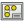
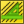

The preferences screens of the TechDraw module are found in the Preferences window (Menu Edit → Preferences).
Your preference screens may look slightly different depending on platform or formatting scheme.
TechCrtanje 1

General
- Projection Angle -  ProjectionGroups will use either First or Third angle projection. (see multiview projection)
- Hidden Line - the style (solid, dashed, etc) to be used for hidden lines.
- Detect Faces - if ticked, TechDraw will attempt to build faces using the line segments returned by the hidden line removal algorithm. Faces must be detected in order to use
 hatching, but there can be a performance penalty in complex models.
hatching, but there can be a performance penalty in complex models. - ShowSectionEdges - highlight the border of the section cut in
 section views. Usually only for debugging.
section views. Usually only for debugging. - KeepPagesUpToDate - keeping the drawing pages in sync with the 3D model in real time can slow response times. In complex models, unticking this box will allow for quicker responses. Use the "KeepUpdated" property of Page to selectively update a single Page.
- Template Dot Size - Controls the size of the small green dot used for selecting editable text in a Template.
{kind=link}
Colors
you can set your preferred colors here.
Labels
- Label Font - the name of the default font for Labels.
- Label Size - default size (mm) for label text.
- Template dot size - green unit dot size in units
Files
- Default Template - use this file chooser to select a default Template file for your drawings.
- Template Directory - the starting directory for
 New Page from Template.
New Page from Template. - Hatch Image - default Svg or Bitmap file for
 hatching.
hatching. - PAT File - default PAT pattern definition file for hatching.
- Pattern Name - the name of your favourite PAT pattern.
TechCrtanje 2

Dimensions
- Show Units - append the unit specifier (mm,in,etc) to values.
- Use Global Decimals - use the number of decimal positions from Preferences>General>Units.
- Alternate Decimals - if Use Global Decimals is unticked, use this number of decimal positions.
- Font Size - size for Dimension Text.
- Color - default color for Dimension text and lines.
- Diameter Symbol - diameter dimensions will be prefixed by this text.
- Arrow Style - choose the dimension line end mark you prefer.
- Arrow Size - size of end mark in mm.
Decorations
- Line Group - the name of default line group specification.
- Matting Style - show
 detail views as circles or rectangles.
detail views as circles or rectangles. - Center Line Style - default style for View center lines (horizontal and vertical).
- Center Line Color - default color for View center lines.
- Section Line Style - default style for section line in the Base View of a Section View.
- Section Line Color - default color for section lines.
- Hatch Weight - default line thickness for  geometric hatching. See hatching.
{kind=link}
Back to TechDraw .